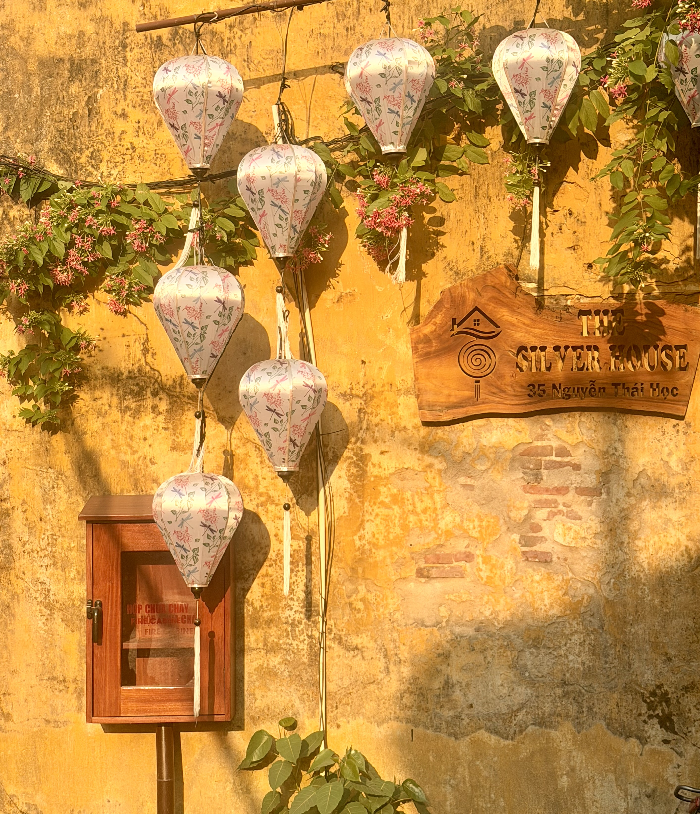

The Experience
From Da Nang to Hoi An
Central Vietnam offers the perfect balance of relaxation, culture and incredible food. We based ourselves in Da Nang before spending time exploring the beautifully preserved streets of nearby Hoi An, a destination that quickly became one of our favourites in Southeast Asia.
Da Nang provides long stretches of golden sand, luxury beachfront resorts and a relaxed atmosphere that's ideal for slowing down. Just a short drive away, Hoi An feels like stepping into another era, where colourful lanterns illuminate narrow streets lined with historic buildings, riverside cafés and family-run restaurants.
What makes this part of Vietnam so memorable is how effortlessly it combines everything we love about travel. Beautiful beaches, fascinating history, warm hospitality and some of the best food we've experienced anywhere in Asia create a destination that's easy to recommend and even easier to return to.
